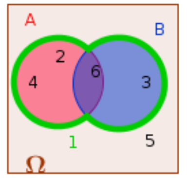

Probabilités
1 Expérience aléatoire
On lance un dé équilibré à six faces et on note le résultat obtenu sur la face supérieure. Il s’agit bien d’une expérience aléatoire :
Il n’est pas possible de savoir sur quel chiffre le dé va s’arrêter.
Les issues de cette expérience sont les chiffres 1, 2, 3, 4, 5, 6. L’univers est donc \Omega = \{1, 2, 3, 4, 5, 6\}.
Un événement est par exemple : A= « obtenir un nombre pair ». On a alors A=\{2, 4, 6\}. Un événement élémentaire est par exemple : B= « obtenir un 4 ». Dans cette expérience il y a six événements élémentaires.
Une expérience aléatoire est une expérience vérifiant les deux conditions suivantes :
elle comporte plusieurs issues envisageables ;
on ne peut pas prévoir l’issue lorsqu’on réalise l’expérience.
L’univers de l’expérience aléatoire est l’ensemble des issues de cette expérience aléatoire. On le note \Omega.
Un événement est un ensemble d’issues de l’expérience aléatoire.
Les événements élémentaires sont les événements réduits à une unique issue de l’expérience.
2 Probabilité d’un événement
2.1 Loi des grands nombres et probabilité
On simule n lancers d’un dé équilibré à six faces, et on note le nombre de fois où le chiffre 4 est sorti.
| Nombre de lancers | 10 | 50 | 100 | 500 | 1000 | 10000 | 100000 |
|---|---|---|---|---|---|---|---|
| Nombre de 4 obtenus | 3 | 10 | 19 | 76 | 161 | 1681 | 16649 |
| Fréquence d’apparition | 0,30 | 0,20 | 0,19 | 0,152 | 0,161 | 0,1681 | 0,16649 |
On peut remarquer que la fréquence s’approche de la valeur \frac{1}{6} \approx 0{,}1667. La probabilité d’obtenir un 4 est donc \frac{1}{6}.
Lors d’une expérience aléatoire répétée un grand nombre de fois, les fréquences obtenues d’un événement A de l’expérience se rapprochent d’une valeur théorique.
Cette valeur théorique s’appelle probabilité de l’événement A.
2.2 Calcul de probabilités
Dans une expérience aléatoire :
La probabilité \mathbb{P}(A) d’un événement A vérifie : 0 \leqslant\mathbb{P}(A) \leqslant 1.
La somme des probabilités des événements élémentaires vaut 1.
La probabilité d’un événement est la somme des probabilités des événements élémentaires qui le constituent.
La probabilité d’un événement certain est égale à 1.
La probabilité d’un événement impossible (noté \varnothing) est égale à 0.
Dans l’exemple précédent, il y a autant de chances d’obtenir un 4 qu’un 6 ou un 2. Tous les événements élémentaires ont donc pour probabilité \dfrac{1}{6}. Il y a 6 événements élémentaires: 6\times\dfrac{1}{6}=1.
La probabilité de l’événement A=“obtenir un nombre pair” est :
\mathbb{P}(A)=\mathbb{P}(\{2\})+\mathbb{P}(\{4\})+\mathbb{P}(\{6\})=3\times\dfrac{1}{6}=\dfrac{1}{2}.
3 est le nombre d’éléments de A, que l’on appelle cardinal de A et que l’on note \text{card}(A).
Lorsque, dans une expérience aléatoire, toutes les issues ont la même probabilité de se réaliser, on dit que l’expérience est équiprobable.
Lors d’une expérience aléatoire ayant n issues équiprobables :
La probabilité de chaque événement élémentaire est \frac{1}{n}.
La probabilité d’un événement A est donc \mathbb{P}(A) = \frac{\text{card}(A)}{n}.
On tire au hasard une carte dans un jeu de 32 cartes.
L’univers est l’ensemble des 32 cartes: \Omega= \{as de pique,..., sept de carreau...\} Quels sont les événements élémentaires de cette expérience? Quelles sont leurs probabilités respectives?
Il s’agit d’une expérience équiprobable.
On note J l’événement “tirer un roi”. J=\{ roi de trèfle, carreau, cœur et pique\} On a alors \mathbb{P}(J)=\dfrac{4}{32} = \dfrac{1}{8}.
On note C l’événement “tirer un trèfle”. Il y a 8 cartes qui portent du trèfle dans un tel jeu. On a donc \text{card}(C)=8 et donc \mathbb{P}(C)=\dfrac{8}{32} =\dfrac{1}{4}.
3 Réunion et intersection de deux événements
Dans l’exemple du jeu de dé, on considère les événements:
A:“obtenir un nombre pair”.
B:“obtenir un multiple de 3”.
On a alors:

$$
L’événement A \cap B est réalisé lorsque les deux événements A et B le sont.
L’événement A \cup B est réalisé lorsque l’un au moins des deux événements l’est.
3.1 Probabilité d’une réunion
Si A et B sont deux événements d’une expérience aléatoire, alors : \mathbb{P}(A \cup B) = \mathbb{P}(A) + \mathbb{P}(B) - \mathbb{P}(A \cap B)
Reprenons le jeu de cartes, et les événements:
A:“tirer un roi”
B:“tirer un cœur”
On a alors: A\cap B= “tirer le roi de cœur”, donc \mathbb{P}(A\cap B)=\dfrac{1}{32}. On a déjà vu que \mathbb{P}(A)=\dfrac{1}{8} et \mathbb{P}(B)=\dfrac{1}{4}. L’événement A\cup B a donc pour probabilité:
\begin{aligned} \mathbb{P}(A\cup B)&=\mathbb{P}(A)+\mathbb{P}(B)-\mathbb{P}(A\cap B) \\ & = \dfrac{1}{8}+\dfrac{1}{4}-\dfrac{1}{32} \\ & =\dfrac{4}{32}+\dfrac{8}{32}-\dfrac{1}{32} \\ & =\dfrac{11}{32} \end{aligned}
3.2 Événements incompatibles
Deux événements sont dits incompatibles lorsqu’ils ne peuvent pas se réaliser simultanément (A \cap B = \varnothing).
Si deux événements A et B sont incompatibles, alors \mathbb{P}(A \cup B) = \mathbb{P}(A) + \mathbb{P}(B).
Reprenons le jeu de cartes: On tire une carte parmi les 32 du jeu. Les événements A : “tirer un carreau” et B : “tirer un pique” sont incompatibles: on ne peut pas tirer à la fois un carreau et un pique.
Donc:
\mathbb{P}(A\cup B)=\mathbb{P}(A)+\mathbb{P}(B)=\dfrac{1}{4}+\dfrac{1}{4}=\dfrac{1}{2}.
3.3 Événement contraire
On appelle événement contraire d’un événement A l’événement, noté \bar{A}, qui contient l’ensemble des issues n’appartenant pas à A.
L’événement contraire de A=“obtenir un chiffre pair”=\{2,4,6\} lors du lancer d’un dé est \bar{A}=“ne pas obtenir un chiffre pair”=“obtenir un chiffre impair”=\{1,3,5\}.
De même l’événement contraire de C dans le jeu de cartes est “tirer une carte de cœur, carreau ou pique”.
La probabilité de l’événement contraire d’un événement A est \mathbb{P}(\bar{A}) = 1 - \mathbb{P}(A).
Dans le jeu du lancer de dé, on a donc \mathbb{P}(\bar{A})=1-\dfrac{1}{2}=\dfrac{1}{2}.
Dans le jeu des cartes, on a \mathbb{P}(\bar{C})=1-\dfrac{1}{4}=\dfrac{3}{4}.